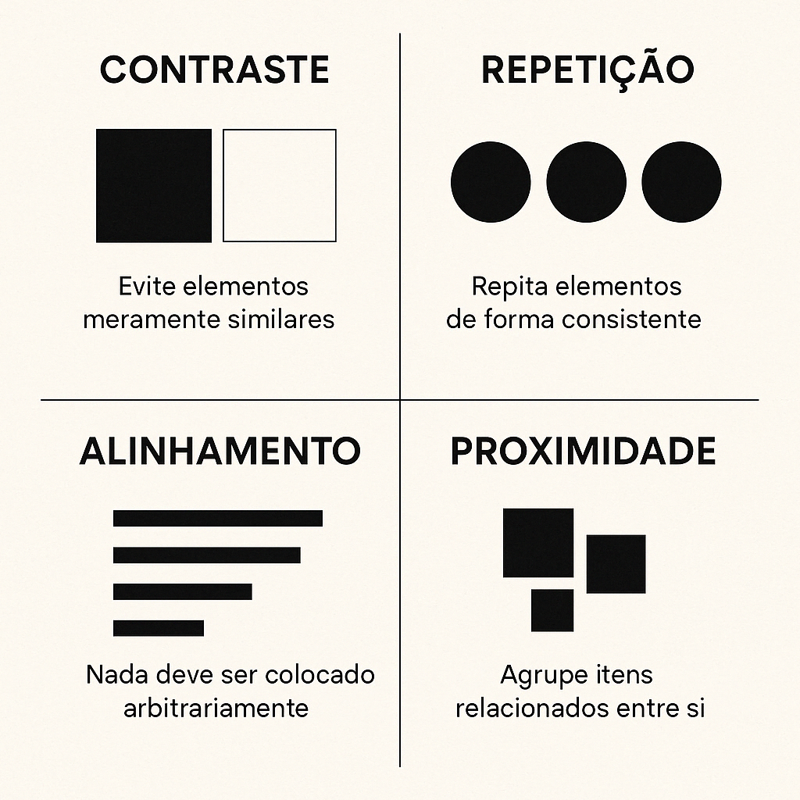
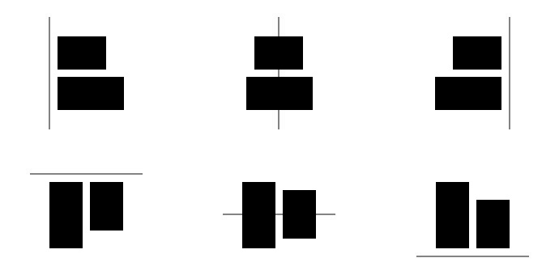
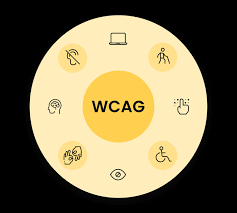

O que é Composição Visual?
A composição visual é a forma como elementos como linhas, formas, cores e espaços são organizados para criar harmonia e clareza.
Podemos pensar na composição visual como:
- Culinária: combinação equilibrada de ingredientes.
- Música: organização de notas para criar harmonia.
- Arquitetura: relação entre elementos estruturais.

Elementos Básicos
- Pontos: Unidades mais Simples
- Linhas: Direcionam o olhar
- Forma: Figuras geometricas ou organicas
- Cor: Criam emoção e hierarquia
- Textur: Superficies visuais
- Espaço: Area positiva e negativa

Princípios de Composição
- Equilíbrio: Distribuição harmoniosa dos elementos
- Contraste: Diferenciação e hierarquia
- Alinhamento: Organização e legibilidade

Tipos de Equilíbrio
Simétrico
Distribuição espelhada dos elementos.
Assimétrico
Elementos diferentes com pesos visuais equivalentes.
Radial
Elementos organizados à volta de um ponto central.

Contraste
- Cor: Usa cores opostas no círculo cromatico (complementares), ou combina cores quentes com cores frias para criar impacto.
- Tamanho: Ampliando um elemento em relação a outros permite tornalo num ponto focal.
- Luminosidade: Contraste entre claro e escuro ajuda a destacar objetos e a criar profundidade.
- Textura: Combina texturas suaves com texturas rusticas para criar

Alinhamento
- Horizontal Os elementos são alinhados ao longo de uma linha horizontal, como à esquerda, à direita ou ao centro
- Vertical
- Em grade
- Centralizado
- Justificado

Grids e Malhas
Estruturas invisíveis que organizam elementos e criam consistência.
- Grid Manuscrito: Utiliza colunas largas para organizar textos extensos
- Grid Colunas: Divide a pagina em colunas flexiveis para alinhar e organizar o conteudo
- Grid Modular: Cria uma matriz com linhas e colunas que formam modulos uniformes
- Grid Hierarquico: Organiza o conteúdo com base na sua importancia, utilizando colunas de largura variadas e uma abordagem mais orgânica

UI e UX
- UX (User Experience): Foca na experiência geral e no que o utilizador sente, garantindo uma navegação intuitiva e satisfatória
- UI (User Interface): Foca no aspeto visual e interativo, ou seja, no que o utilizador vê e toca (botões, cores e layouts)
- Interdependência: Trabalham em conjunto; enquanto o designer de UX define o fluxo, o de UI desenha os elementos visuais específicos para completar a tarefa

Acessibilidade e WCAG
A acessibilidade garante que todos conseguem usar o produto digital.
